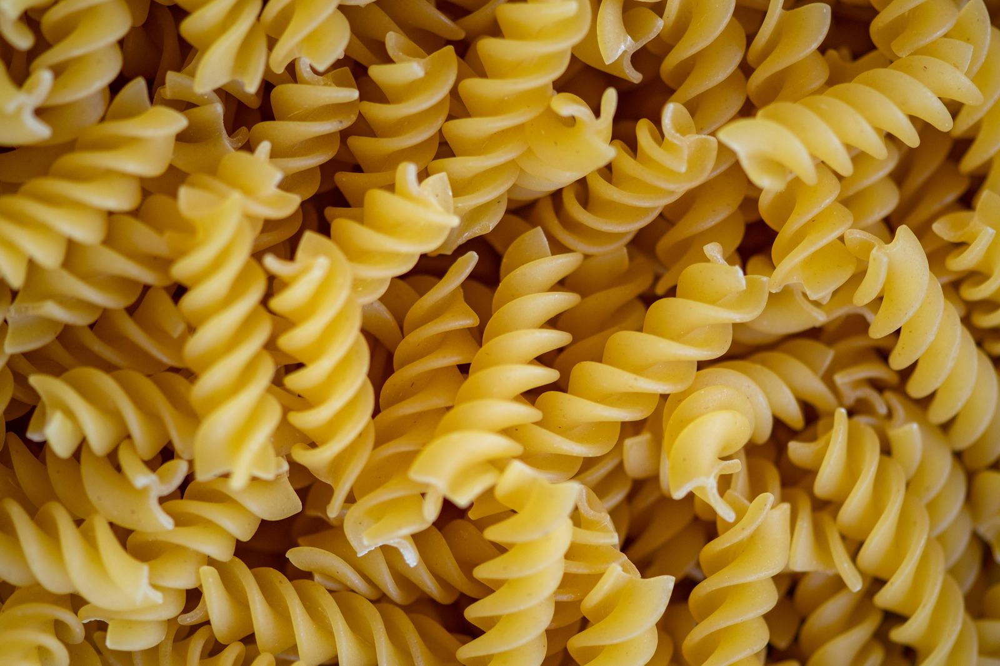
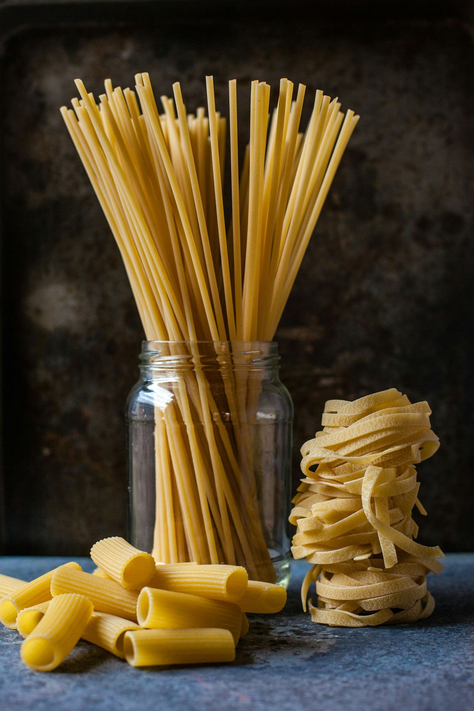

Discover the rich variety of Italian pasta types and their regional traditions. From classic spaghetti to unique shapes like orecchiette and paccheri, explore the world of authentic Italian pasta.
Scopri la ricca varietà di tipi di pasta italiani e le loro tradizioni regionali. Dai classici spaghetti alle forme uniche come le orecchiette e i paccheri, esplora il mondo dell'autentica pasta italiana. Buon appetito!
Non c'è modo migliore di scoprire le varietà e le tradizioni culinarie italiane attraverso i diversi tipi di pasta che caratterizzano ogni regione. Da Nord a Sud, la pasta è una vera e propria arte culinaria che unisce passato e presente con sapori autentici e innovazioni gustose.

Iniziamo parlando dei tipi di pasta corta, tra cui le celebri penne, i rigatoni robusti e i fusilli che si avvolgono attorno ai sughi come piccole viti. Se sei un fan delle zuppe e delle minestre, i sedanini sono perfetti per te, mentre le farfalle sono ideali per creare fresche insalate estive.
Passiamo poi alla pasta lunga, dove gli spaghetti regnano sovrani. Diversi diametri e formati di spaghetti offrono infinite possibilità di abbinamenti, dai sughi di mare ai condimenti più complessi. Le linguine, piatte e versatili, sono ideali per il pesto genovese o per esaltare i frutti di mare.
Se preferisci una pasta più robusta, opta per i bucatini, perfetti per piatti come l'amatriciana o la cacio e pepe. E non dimentichiamo i ravioli, tortellini e agnolotti, gustosi bocconi di pasta ripiena che variano da regione a regione, con ripieni di carne, pesce o formaggio.

Con oltre 300 tipi di pasta nel mondo, la varietà è sorprendente e ogni tipo ha una storia da raccontare. Ogni regione italiana porta avanti la sua tradizione culinaria con orgoglio, offrendo una vasta gamma di forme e sapori che deliziano i palati di tutto il mondo.
1. Orecchiette: Sono una pasta tradizionale della Puglia con una forma unica a orecchia, ideale per catturare i deliziosi condimenti. Queste piccole "orecchie" sono spesso accompagnate dalle cime di rapa in un piatto classico della cucina pugliese.
2. Paccheri: Sono tubi di pasta larghi e rigati, originari della Campania. La loro forma e consistenza permettono di catturare salse e sughi densi, rendendoli perfetti per piatti robusti come la pasta al ragù o la pasta al forno.
3. Ravioli Sono quadrati o tondi di pasta ripiena, disponibili in una varietà di ripieni tra cui carne, pesce, verdure o formaggi. Questi deliziosi bocconi sono un classico della cucina italiana e possono essere serviti con una semplice salsa di burro e salvia o con un ricco ragù.ù
Scoprire la varietà di forme e sapori della pasta italiana è un vero piacere per gli amanti del cibo. Ogni tipo di pasta ha la sua personalità e si abbina in modo unico ai diversi condimenti, portando in tavola un'esperienza culinaria indimenticabile.
Che tu sia un appassionato di pasta o un curioso gourmet, esplorare i diversi tipi di pasta italiana è un viaggio attraverso la cultura e la creatività del Bel Paese. Prepara la tua pentola, scegli il formato che preferisci e immergiti nell'autentica esperienza culinaria italiana!
fonte: Tutti i tipi di pasta: di regione in regione, di tradizione in tradizione
Parole chiave
| Pasta | Cibo italiano fatto di farina e acqua, di solito a forma di fili o piccole forme. |
| Regione | Area geografica più grande di una città, con caratteristiche culturali e tradizioni specifiche. |
| Tradizione | Pratica o abitudine che viene seguita da una cultura o da una comunità da molto tempo. |
| Spaghetti | Tipo di pasta lunga e sottile. |
| Penne | Tipo di pasta corta, a forma di tubo con tagli diagonali alle estremità. |
| Rigatoni | Tipo di pasta corta, con scanalature esterne. |
| Sedanini | Tipo di pasta corta e sottile. |
| Fusilli | Tipo di pasta corta a forma di spirale. |
| Farfalle | Tipo di pasta a forma di farfalla. |
| Paccheri | Tipo di pasta larga e tubolare. |
| Orecchiette | Tipo di pasta a forma di piccole orecchie. |
| Ravioli | Pasta ripiena, solitamente a forma di quadrato o cerchio. |
| Tortellini | Pasta ripiena, a forma di anello. |
| Agnolotti | Pasta ripiena a forma di semicerchio. |
| Cucina | L'atto di cucinare cibo. |
| Piatto | Contenitore per servire il cibo. |
| Condimento | Salsa o ingrediente aggiunto al cibo per dare sapore. |
| Gusto | La sensazione di sapore percepita dal cibo. |
| Autentica | Originale, senza modifiche. |
Esercizio
https://wordwall.net/play/71237/990/933
Domande
- Quali sono due tipi di pasta corta menzionati nel testo?
- Cosa sono gli spaghetti e da quale regione italiana provengono?
- Descrivi brevemente cosa sono i ravioli.
- Qual è il significato di "tradizione" nel contesto della cucina italiana?
- Perché la varietà di pasta in Italia è così ampia secondo il testo?